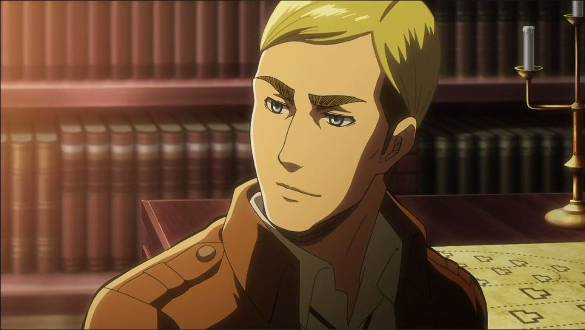

ИсторияТоп самых популярных персонажейИстория создания образа титановМангаПервый титанВооружённый силыРост титанов |
Эрвин СмитЭрвин Смит (エルヴィン・スミス Эрувин Сумису) — 13-й Главнокомандующий Разведкорпуса. Он рассудительный, умный и уважаемый человек. Несмотря на аналогичную Леви заботу о членах своего отряда, в случае необходимости без колебаний готов пожертвовать ими ради остального человечества. Он также разработал вид военного построения, позволяющего заранее обнаружить находящегося далеко противника. Также, на протяжении большой части своей службы в качестве командира, отстаивал независимость Разведкорпуса тем самым, спасая его от расформирования.  Эрвина считают серьезным и расчетливым. Несмотря на абсолютное доверие, именно он первым начинает придерживаться мысли, что среди солдат Легиона появился шпион, и начинает обдумывать план его поимки. Кроме этого, он красноречивый оратор, способный умело сыграть на струнах души многих людей. Среди них были члены военного трибунала, судящего Эрена, и бывшие кадеты 104-го набора, решавшие готовы ли они присоединиться к Разведкорпусу, или нет.
<на главную |